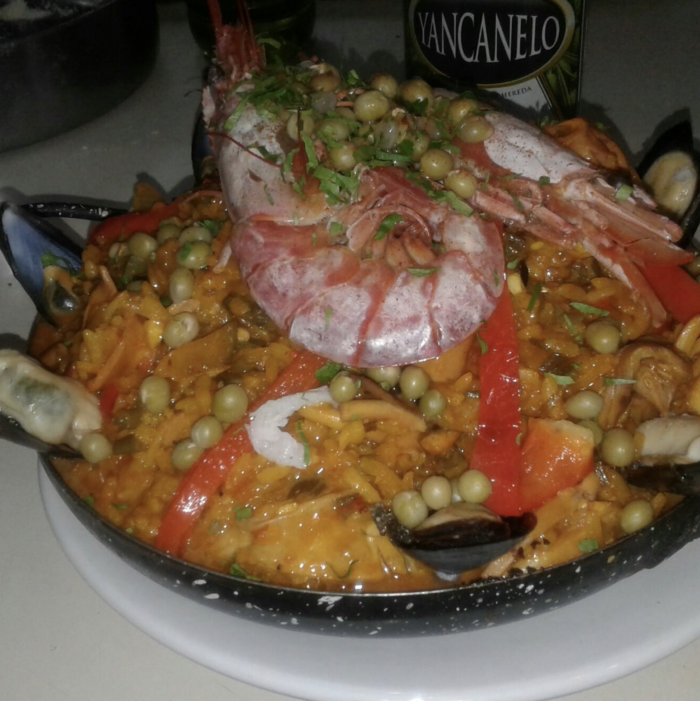
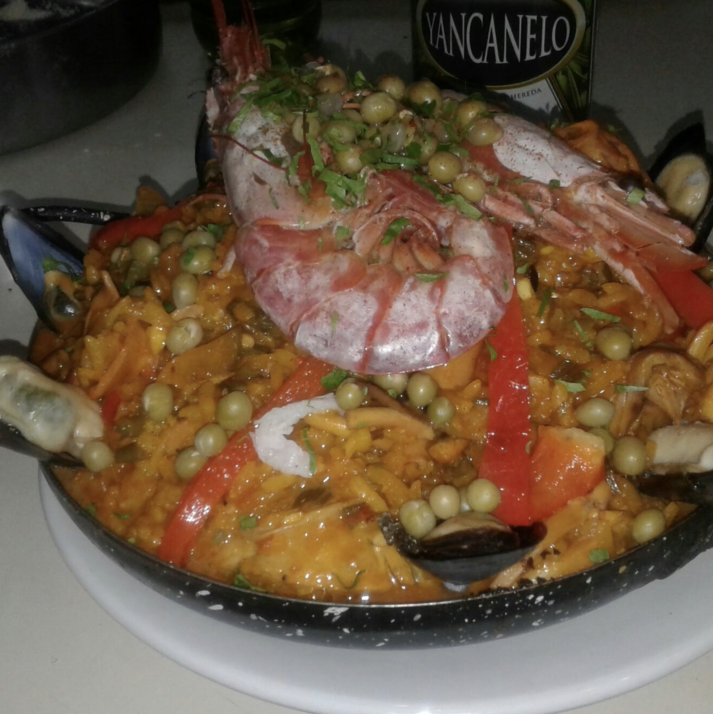
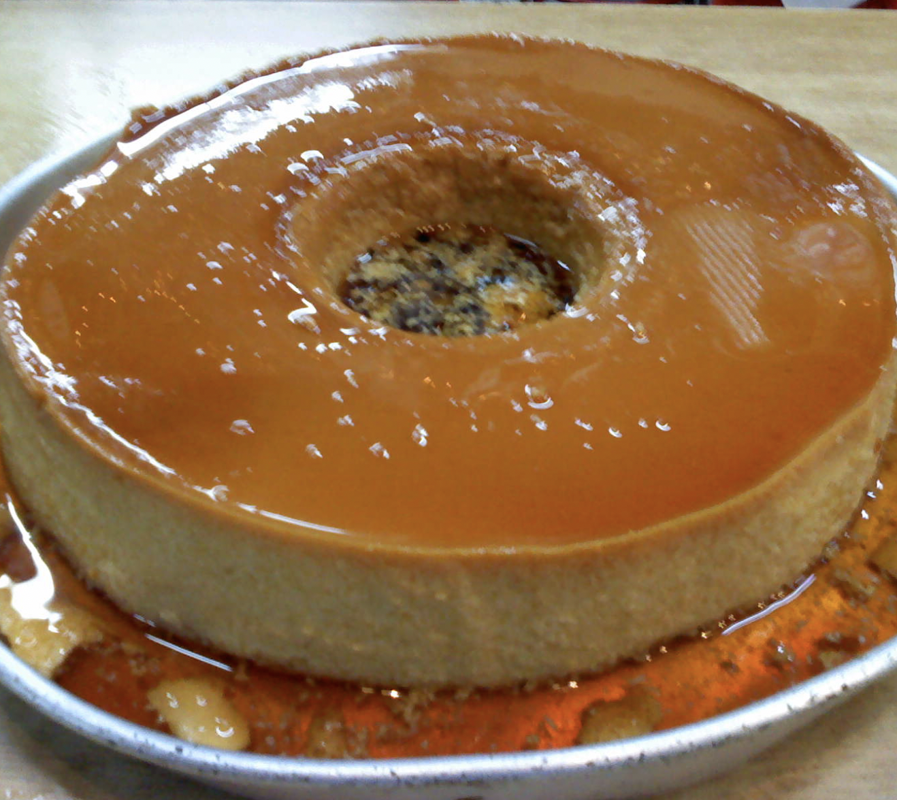
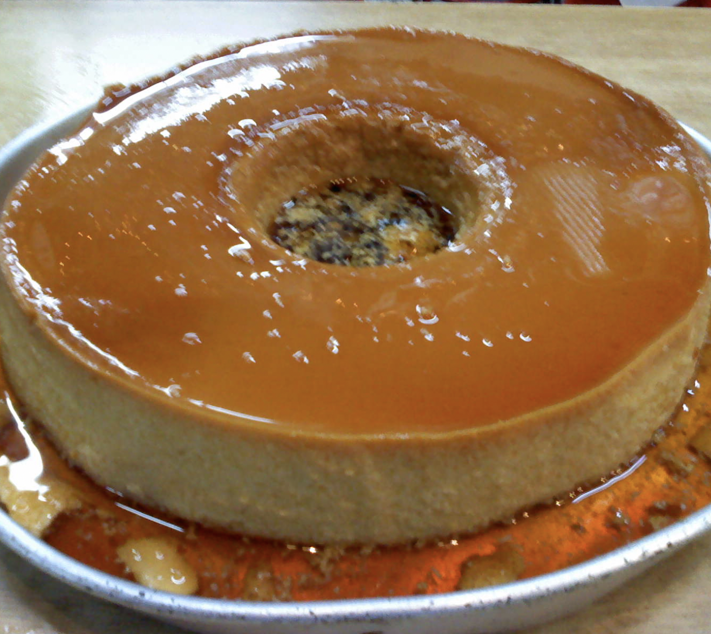
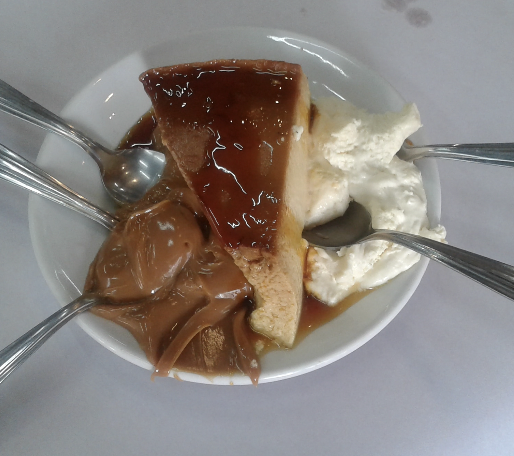
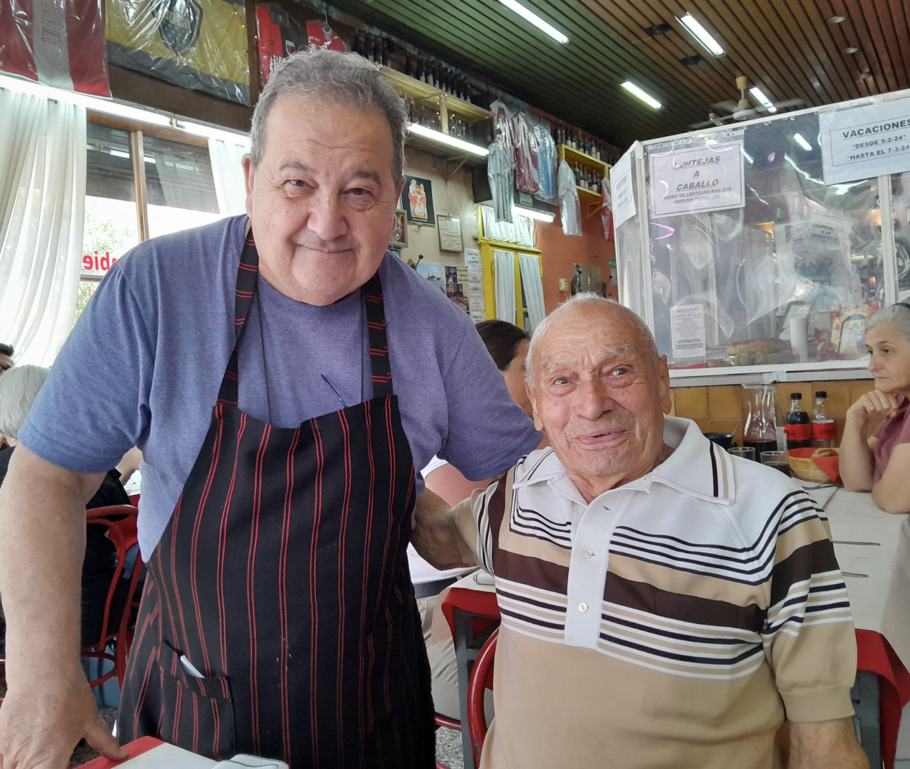
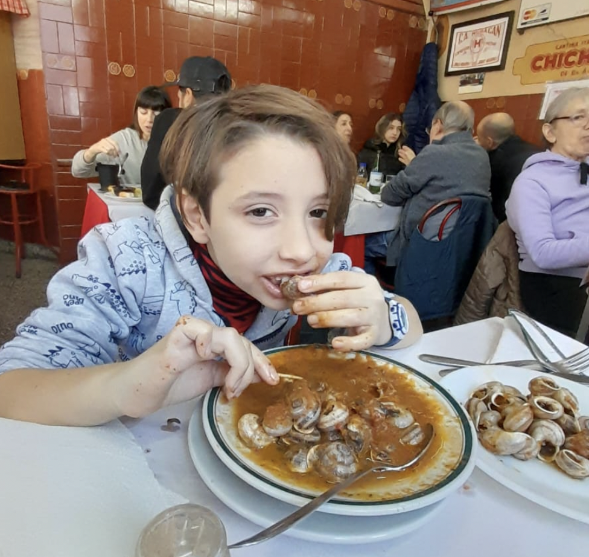
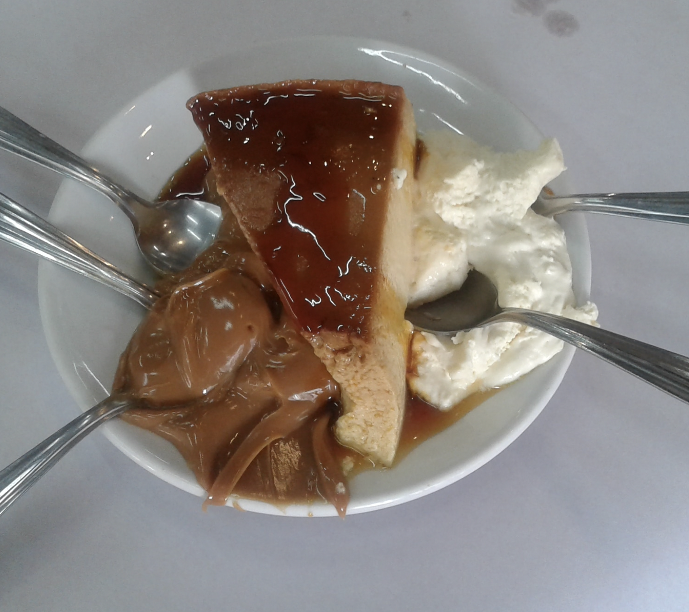
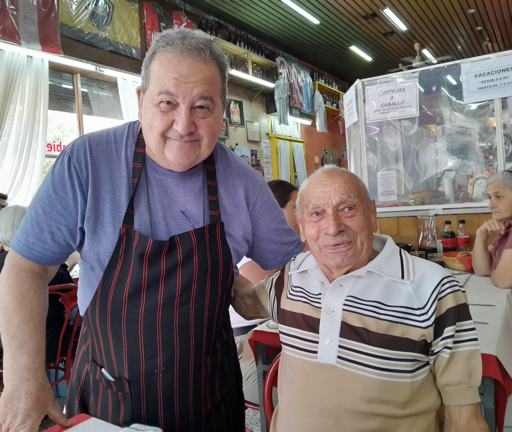
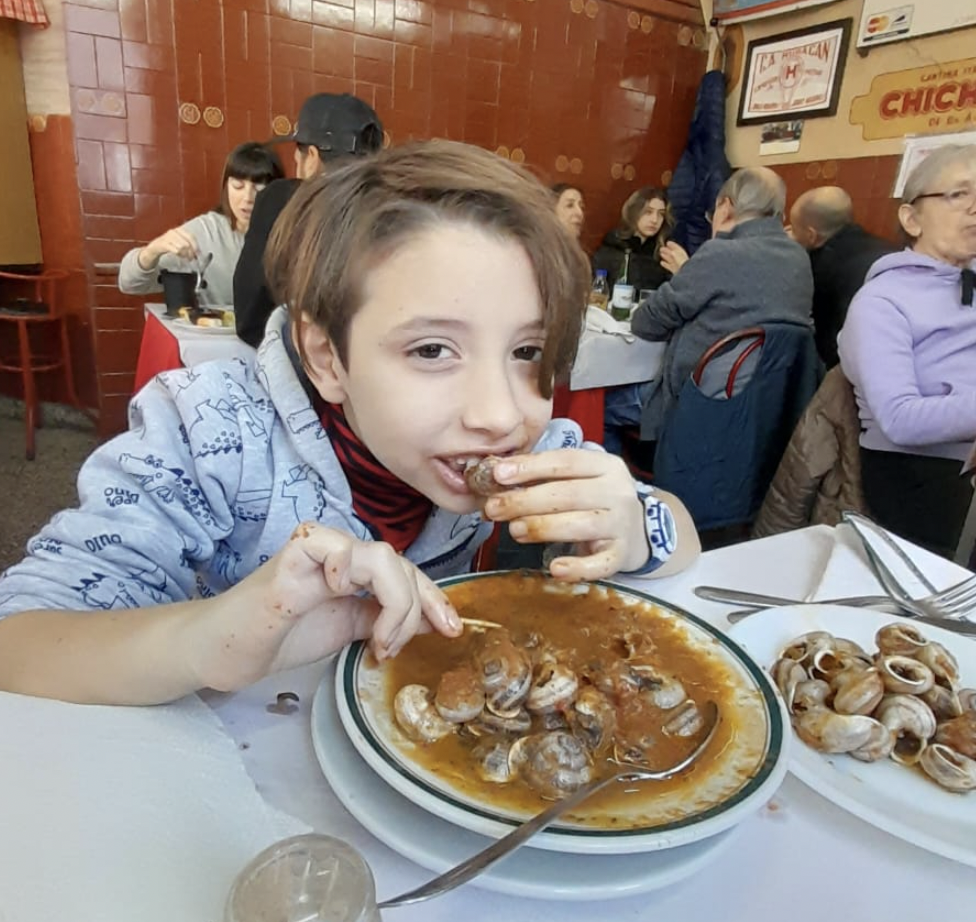

Desde 1956, una familia para servirlo
CAMARONES 1901- CABA - @cantinachichilook
DE JUEVES A SABADOS DE 20.30 A 00.00 HRS SABADOS Y DOMINGOS DE 12.30 A 14.30 HRS
DE JUEVES A SABADOS DE 20.30 A 00.00 HRS SABADOS Y DOMINGOS DE 12.30 A 14.30 HRS
 

 

 





Cantina Italiana Chichilo de Buenos Aires
Dirección: Camarones 1901 esquina Terrero 2006
Código Postal: 1416, Capital Federal - República Argentina
Teléfono: 011-4581-1984 / 011-4584-1263
Email: cantinachichilo@cantinachichilo.com.ar
Para reservas, llame al: 011-4581-1984 / 011-4584-1263
Horario de atención:
- De jueves a sábados por la noche
- Sábados y domingos para almuerzos
La elegida por Pol-ka para las mejores producciones: "El Sodero de mi Vida", "Ilusiones", "Mujeres Asesinas", ganadora de los premios Clarín y Martín Fierro 2005. Especiales Cantina Chichilo de Buenos Aires, desde hace 65 años al servicio del buen comer, atendidos por sus dueños en un barrio de famosos: La Paternal. Además, la producción de Pol-ka la eligió para la apertura de la novela "Ilusiones" y "El Sodero de mi Vida". Además, es el lugar preferido de Diego Maradona.